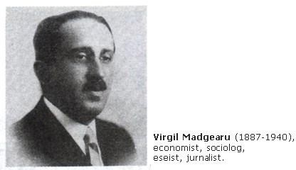
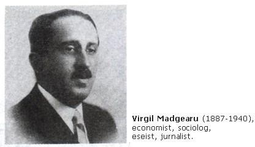

Despre Virgil Madgearu
Virgil Madgearu a fost un economist, sociolog și politician de stânga, recunoscut pentru contribuțiile sale în domeniul economiei agrar-țărănești.
Virgil Madgearu a fost un economist, sociolog și politician de stânga, recunoscut pentru contribuțiile sale în domeniul economiei agrar-țărănești.
